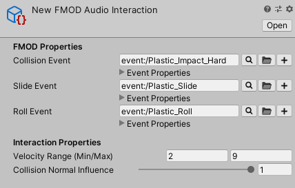

FMOD Integration
Impact features an optional package for integrating with FMOD. This allows you to utilize FMOD for playing audio interactions, rather than using Unity's built-in audio clips and audio sources.
Setup
First, you will need make sure you have downloaded and set up the FMOD for Unity package. You can get this package from either the FMOD site or from the Asset Store.
Next, you will need to download and import the Impact FMOD Integration package.
FMOD For Unity Version: 2.02.04
Required Impact Version: 1.8.0+
FMOD Audio Interaction
The Impact FMOD integration package is very lightweight and only introduces one new asset: the FMOD Audio Interaction. This is simply the FMOD-ified version of the default Audio Interaction. You can create a new FMOD Audio Interaction by going to .
The FMOD Audio Interaction has the following properties that relate to FMOD:
- Collision Event – The FMOD event to trigger when processing single-impact collisions. This event should consist of one-shot sounds.
- Slide Event – The FMOD event to trigger when sliding. This event should have looping sound(s).
- Roll Event – The FMOD event to trigger when rolling. This event should have looping sound(s).
FMOD Audio Interactions also share the following properties with the default Audio Interaction:
- Velocity Range – Input velocities will be converted to a normalized (0 to 1) value based on this range and the Collision Normal Influence.
- Collision Normal Influence – How much the input normal will effect the calculated intensity of the collision. This can be used so that grazing collisions will have a low volume even if they have a high velocity.
FMOD Parameters
Impact interactions send various parameters to FMOD to let you control your sounds:
- Intensity – A 0 to 1 value representing the intensity of the collision. This is calculated by normalizing the collision velocity relative to the Velocity Range, and also takes into account the Collision Normal Influence.
- Velocity – The real velocity of the collision, with no modifications.
- CompositionValue – If using Material Composition, a 0 to 1 value representing the influence of the material at the contact point. If not using Material Composition, this will always be 1. You could use this value to scale the volume of your sounds, so that a higher composition yields a louder volume than a lower composition.
- InteractionType – An integer number that represents the type of interaction. The built-in triggers use the following values:
- 0 = Collision
- 1 = Slide
- 2 = Roll
- 3 = Simple (i.e. no velocity or material data. Intensity will always be 1 and Velocity will always be 0.)
Notes
When using the Impact FMOD Integration, there are a few differences in how certain Impact properties affect the audio:
- The Priority property on Impact Objects do not affect FMOD Audio Interactions. Instead, you should be controlling the priority using the Priority setting on your events in FMOD Studio. This is not to be confused with the High Priority property on Impact Triggers, which will still be in effect.